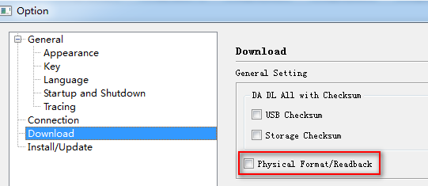

For Format/Readback, there are two address types, Physical and Logical, which affect the address range in operations.
NOTE: address type is effective only on NAND flash.
Logical Format/Readback is used to protect BMT on NAND flash and only physical format/readback could do operations on BMT area.
�� Enable Physical Format/Readback
��Option -> Options�� to open ��Option Dialog��, select ��Download��, ��Physical Format/Readback�� could be found in ��General Setting��.
Check the option to enable Physical Format/Readback.
